Propuesto por Juan Bosco Romero Márquez, profesor colaborador de la Universidad de Valladolid.
Problema 295 Se toma al azar un punto M en el interior de un triángulo arbitrario ABC.
a) ¿Cuál es la probabilidad para que, si desde punto se bajan las perpendiculares MA1, MB1, MC1, sobre los tres lados se pueda construir un triángulo con MA1 MB1 y MC1?.
b) ¿Y para que se pueda formar un triángulo que tenga todos sus ángulos agudos?
Solución de José María Pedret, Ingeniero Naval. Esplugues de Llobregat (Barcelona). (2 de febrero de 2006) |
|
INTRODUCCIÓN |
|
Sólo responderemos al apartado a) del problema.
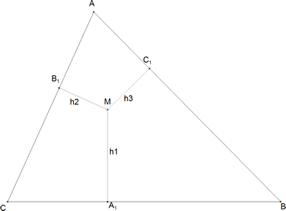 figura 1 Entiendo que dentro del triángulo ABC dado existirá una región cuyos puntos proporcionarán las alturas adecuadas para poder construir un triángulo. Como el triángulo dado encierra todo el universo de puntos que podemos tomar definiremos como su medida al área T del triángulo dado. Definimos como medida de los casos válidos al área R del recinto definido por los puntos M que sí permiten la construcción de un triángulo. Tomamos como probabilidad de que un punto sea válido a la relación entre el área R del recinto de puntos válidos y el área T del triángulo dado.
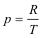 Debemos pues determinar el recinto de puntos válidos. Para ello debemos imponer a las tres alturas que cumplan la desigualdad triangular que es la condición necesaria y suficiente para poder construir un triángulo.
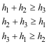 Está claro que estas desigualdades líneales obligan a que el recinto esté delimitados por rectas. Rectas que junto con los lados del triángulo dado constituirán el recinto que queremos determinar. De momento podemos establecer que este recinto será un polígono. Para determinar este polígono, consideremos, por ejemplo la primera inecuación: en su caso límite de triángulo plano ( a partir de aquí no existe la posibilidad de construcción) y pensemos que pasaría si fuera h2=0
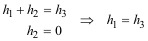 El significado es el siguiente
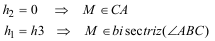
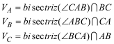 Por lo tanto:
LA REGIÓN DE PUNTOS VÁLIDOS ES EL TRIÁNGULO INSCRITO AL TRIÁNGULO DADO Y CUYOS VÉRTICES SON LAS INTERSECCIONES DE LAS BISECTRICES CON EL LADO OPUESTO |
|
SOLUCIÓN - ÁREA R DEL RECINTO DE PUNTOS VÁLIDOS |
|
PRIMER PASO - COORDENADAS
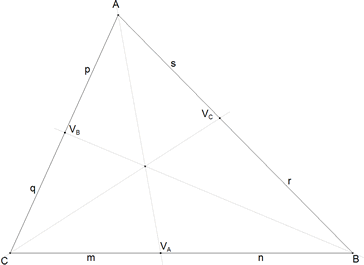 figura 2
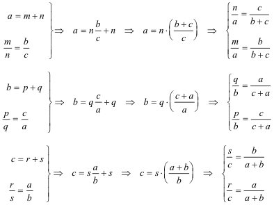
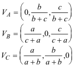 |
|
SEGUNDO PASO - CÁLCULO DEL ÁREA Para saber como se calcula el área de un triángulo en coordenadas baricéntricas recurrimos a la página 13 de las famosas notas de Francisco Javier García Capitán, sobre el tema , que reproducimos a continuación:
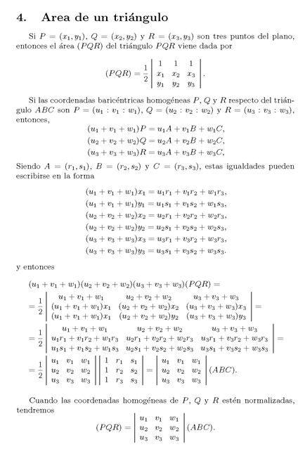 figura 3-fuente Francisco Javier García Capitán
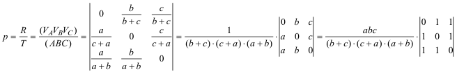
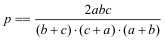
|